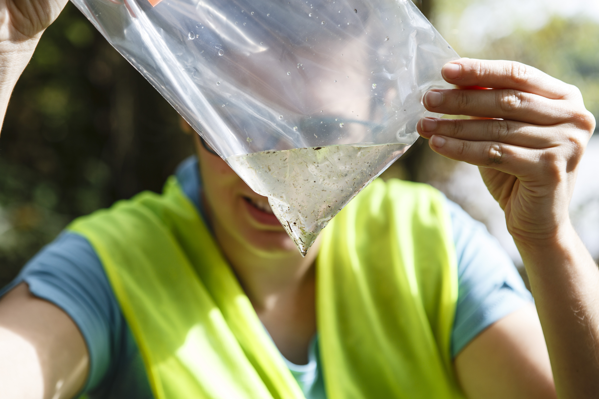

| From |
Rio de Janeiro, Brazil
Where I was born and lived most of my life.
-
Bachelor in Pharmacy and Master in Pharmacology and Medicinal Chemistry. - Federal University of Rio de Janeiro (UFRJ) (2008 - 2015)
-
Pharmacist (analytical chemist) In charge of detection and quantification of organic compounds and metabolites in human urine. - Brazilian Doping Control Laboratory (LBCD) (2014 - 2018) (a pre doc, as I like to call.)
-
Chemistry lecturer - UFRJ (polo Xerem) (2016 - 2018)
| to |
Toulouse, France
-
Doctoral studies in Chemistry - Spatio-temporal monitoring of microplastic pollution in freshwater ecosystem - Universite Paul Sabatier, EDB & IMRCP laboratories (2018 - 2021)
-
DCE (Doctorante Chargee d’Enseignement) aka Teacher Assistant - Biophysics, Informatics, practical courses - Universite Paul Sabatier, School of Pharmacy (2020 - 2021)
| to |
Dijon, France
- Postdoctoral Researcher - Development of analytical methodologies for the characterization of natural organic matter and microplastics in soil and water (SENSAAS (SENSors and Analyses for AquiferS) - transdisciplinary research consortium 2021-2024). - Universite Bourgogne-Franche-Comte, Laboratory of Biogeosciences (2021 - present)

“Na universidade se ensina porque se pesquisa”
(Carlos Chagas Filho)